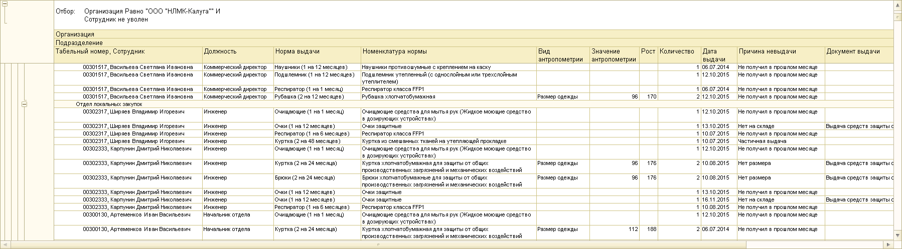

на командной панели отчета. Сохранить отчет можно с помощью кнопки
на командной панели отчета. Сохранить отчет можно с помощью кнопки  .
.1. Отчет по невыданным СИЗ
Данный отчет предназначен для просмотра данных по тем СИЗ, которые по каким-либо причинам не были выданы сотрудникам. Отчет может быть построен как по отдельному сотруднику, так и по всем сотрудникам организации.
Для формирования отчета необходимо зайти в раздел «Выдача», «Панель отчетов по выдаче». В открывшемся окне выбрать «Отчет по невыданным СИЗ».
В панели «быстрых» настроек существует возможность задать организацию, подразделение, причину невыдачи или сотрудника для отбора данных по нужным параметрам.
После настройки параметров нажмите кнопку «Сформировать».
Примечание: просмотр данного отчета возможен только при установленном алгоритме формирования потребности.
Будет сформирован отчет по не выданным СИЗ.

В отчете будут отражены:
1. Данные по сотруднику: ФИО, табельный номер и должность.
2. Информация по принятым нормам для данного сотрудника: наименование и состав нормы.
3. Данные по антропометрии сотрудников.
4. Дата выдачи по сформированной потребности (не является фактической датой выдачи).
5. Причины невыдачи СИЗ сотруднику. Причина переносится из документа выдачи, если она была проведена, но СИЗ по каким-то причинам не было выдано сотруднику. Значение «Не получил в прошлом месяце» говорит о том, что сотрудник должен был получить СИЗ в прошлых периодах, но не пришел. Для алгоритмов с реализованным механизмом частичной выдачи «Пропорция» возможно проставление значения «Недовыдано».
6. Документ выдачи, если выдача была произведена, а необходимые СИЗ по каким-либо причинам не были выданы сотруднику.
Чтобы распечатать сформированный отчет, нажмите кнопку на командной панели отчета. Сохранить отчет можно с помощью кнопки .
Данный отчет отображает список сотрудников, которые по каким-то причинам не получили СИЗ, с их табельными номерами.
Чтобы сформировать данный отчет, зайдите в раздел «Выдача», «Панель отчетов по выдаче», и выберите «Реестр не получивших СИЗ сотрудников».
В открывшемся окне нажмите кнопку «Сформировать». После чего будет выведен отчет.